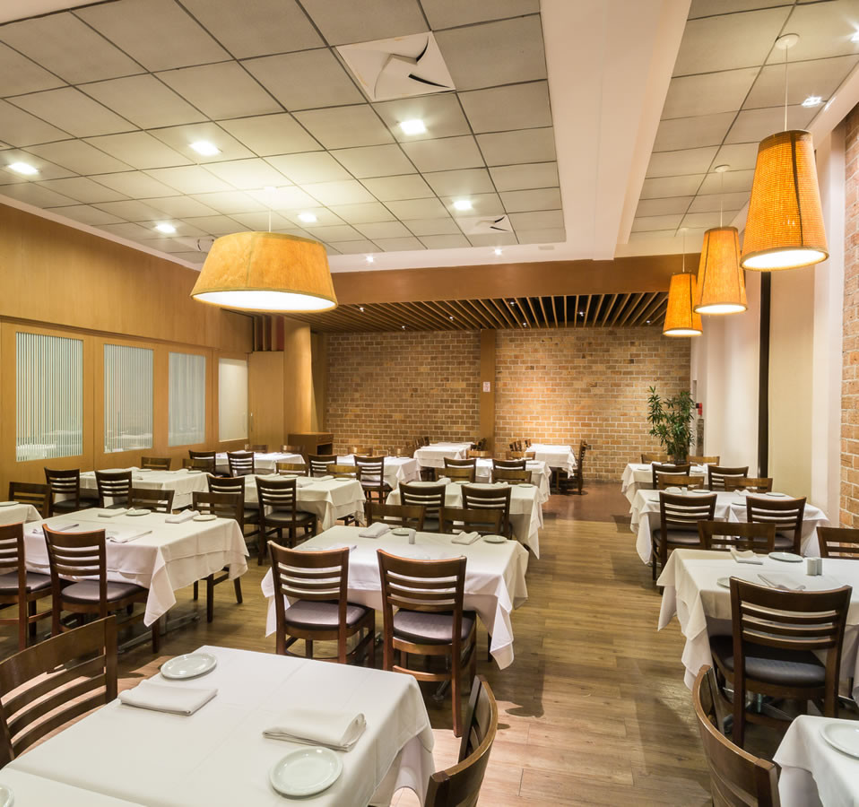
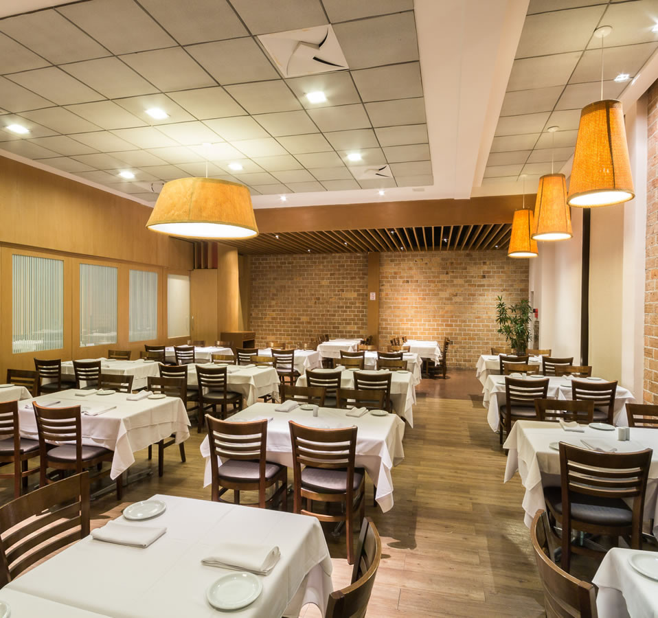
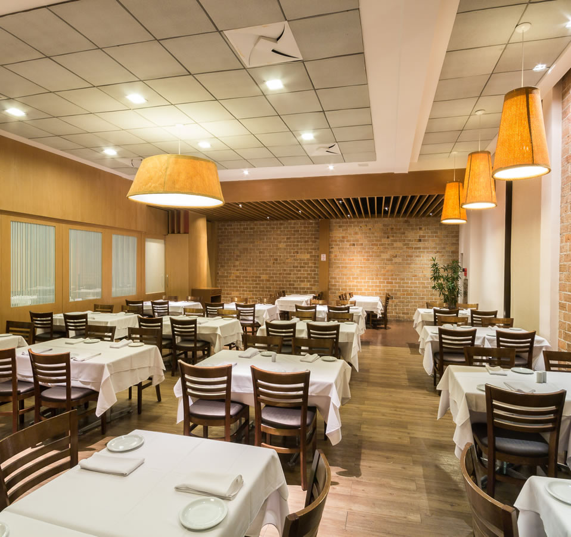

Sinônimo de tradição e qualidade, a Galetu's Churrascaria conquistou o exigente paladar dos pernambucanos. Seja pela comodidade dos nossos serviços, seja pela variedade de cortes de carnes e cardápios. A Galetus já é considerada uma churrascaria Premium por nossos clientes.
Sinônimo de tradição e qualidade, a Galetu's Churrascaria conquistou o exigente paladar dos pernambucanos. Seja pela comodidade dos nossos serviços, seja pela variedade de cortes de carnes e cardápios. A Galetus já é considerada uma churrascaria Premium por nossos clientes.
Nosso objetivo é oferecer um churrasco de qualidade, sempre tendo em mente prover conforto e comodidade para os nossos clientes. Por tudo isso, fazemos do Galetus um lugar de experiências incríveis!

A sala vip é um espaço reservado com capacidade de até 40 pessoas para pequenos eventos em geral, como noivados, casamentos, batizados, aniversários etc.
O espaço conta com decoração especial e disponibilizamos mesa para bolo e docinhos, também permitimos a decoração do espaço à seu gosto feita por profissional terceirizado.
Não cobramos nenhum valor adicional para utilização deste espaço, desde que a reserva tenha o mínimo de 25 pessoas.


O Galetus Kids traz um conceito inovador e familiar para as crianças, oferecendo mais comodidade e tranquilidade para as famílias que desfrutam do Galetus. Além da estrutura, dispomos de uma equipe especializada para atender às crianças. Contudo, a segurança do espaço permite refeições sossegadas aos pais e diversão às crianças.
O “Galetus Kids” conta com TV exibindo programação infantil, diversos brinquedos e várias atividades educativas, como revistas de histórias infantis, pintura com lápis coloridos e giz de cera, além de se divertir com brinquedos de montar e bichos de pelúcia.
Com serviço, que conta com monitora nos almoços dos sábados e domingos, proporcionando maior comodidade aos pais. O novo espaço é recomendado para crianças com idade entre 2 e 8 anos e fica aberto todos os dias, no horário de funcionamento da casa.


Segunda à quinta: 12h às 15h45 e 19h às 23h30, Sextas e Sábados: 12h às 23h30, Domingos e feriados: 12h às 23h
projeto desenvolvido por Ronaldo para aprender HTML